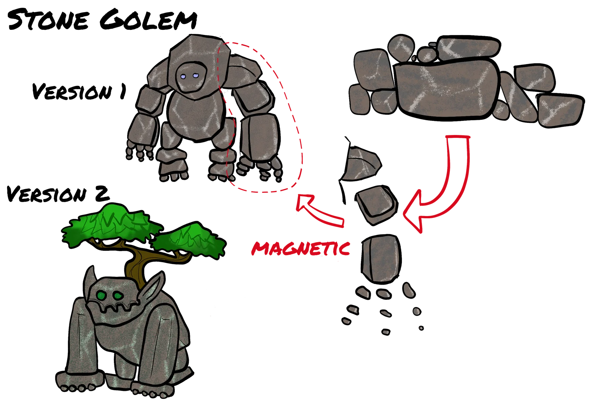
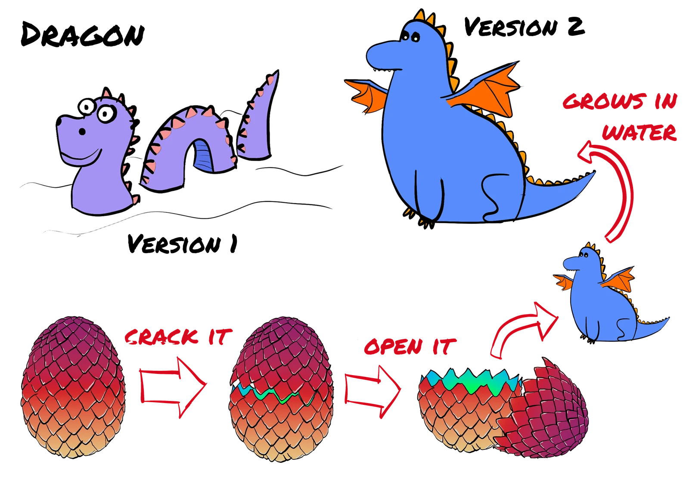
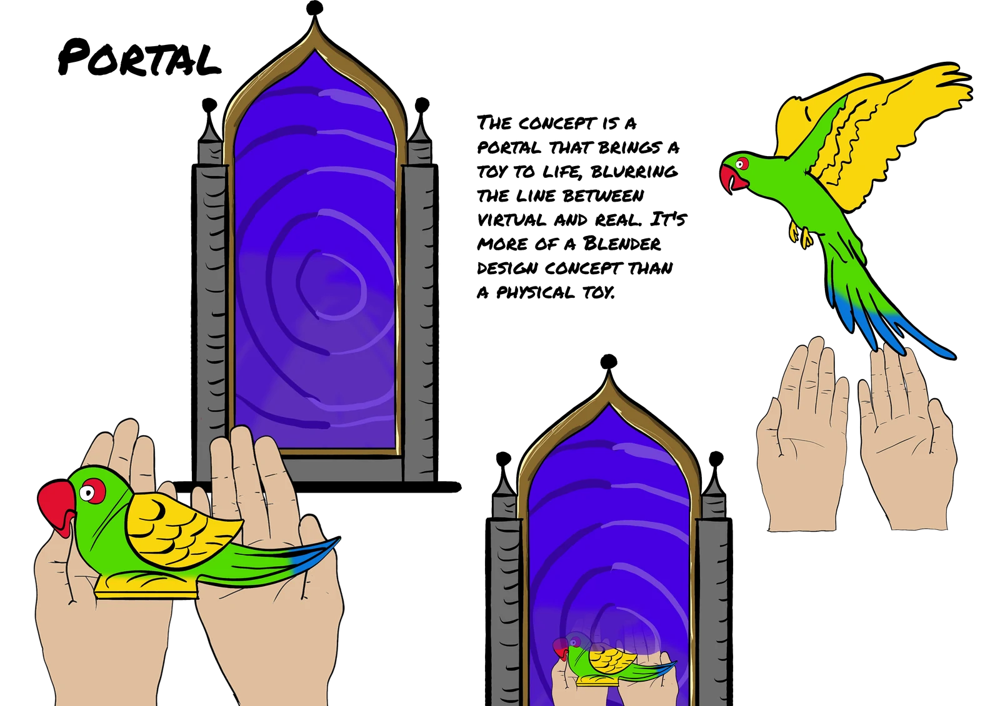
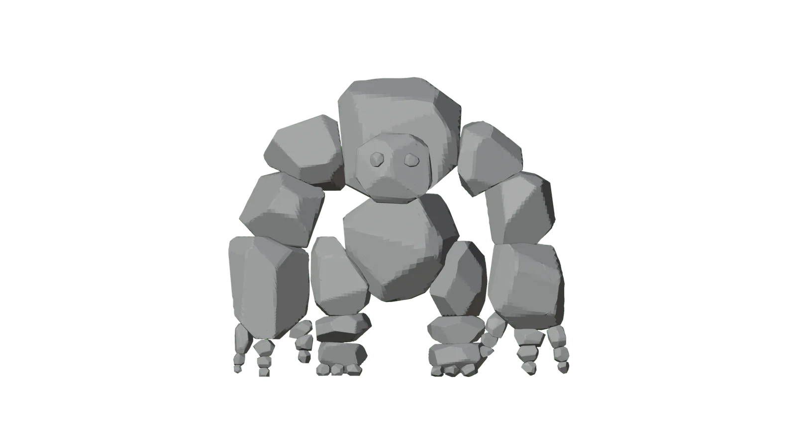
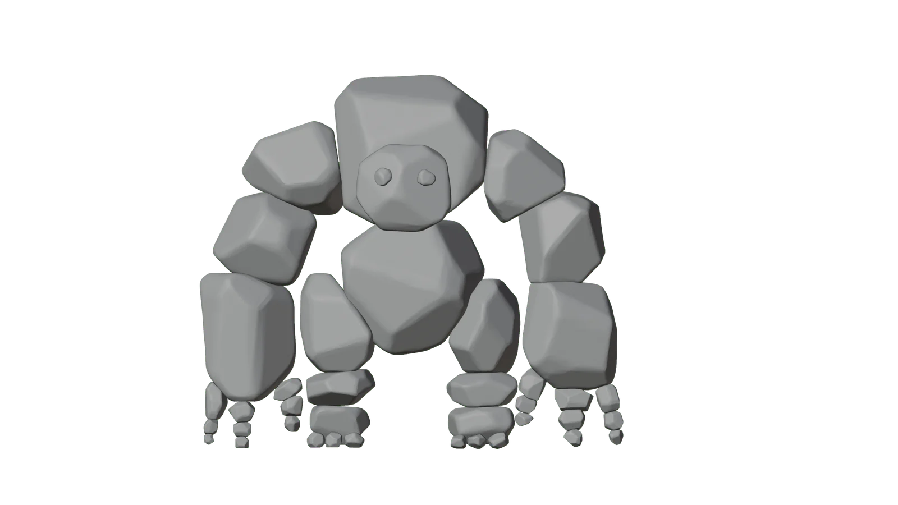
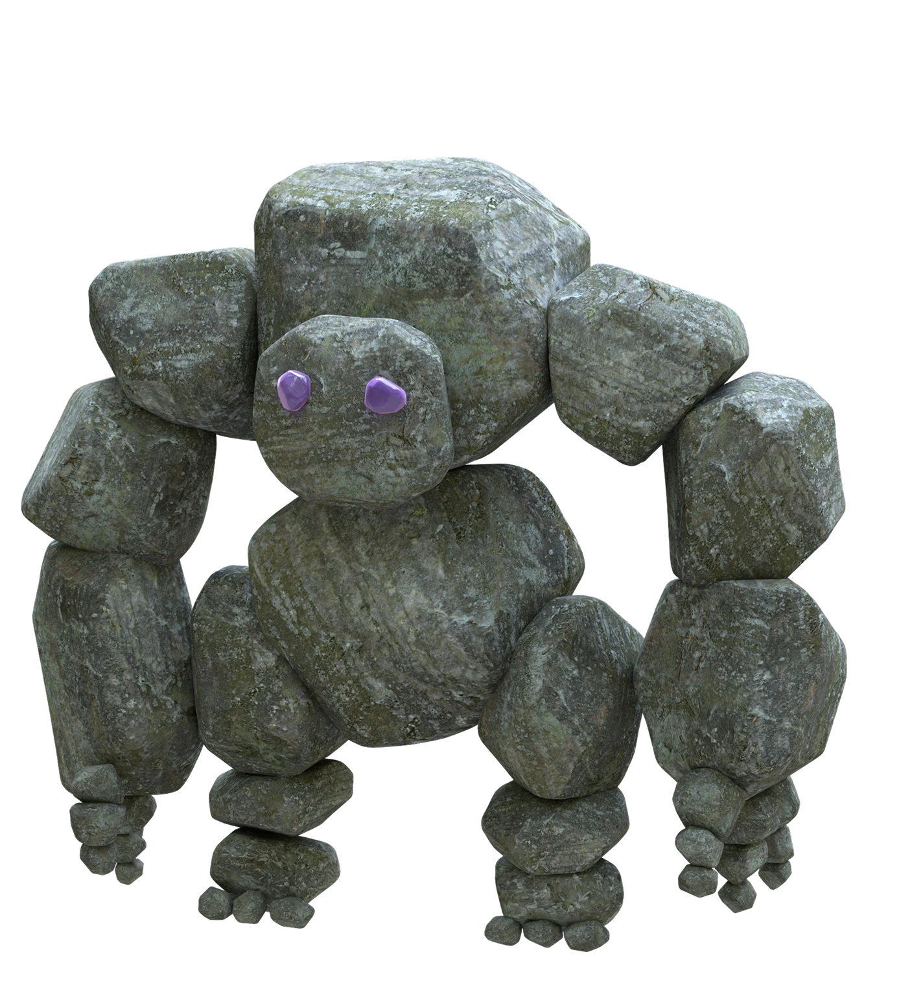
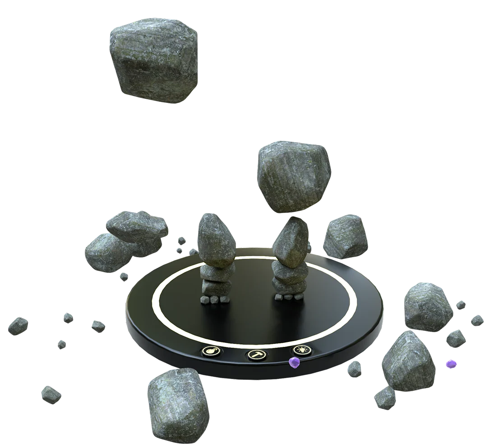
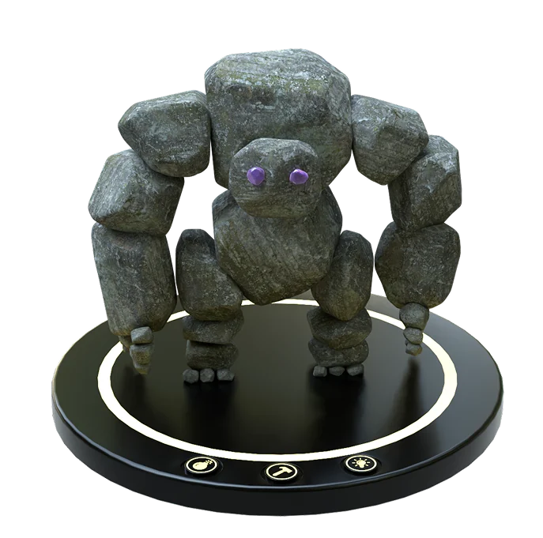

Story of the Stone Golem
A magnetic toy concept became a fairytale world. I developed the character, its home and its story while learning Blender from the ground up.

- Role
- Individual project
- Duration
- 3 months
- Tools
- Blender
- Focus
- Toy concept and visualization
The brief
Create and visualize a toy in the fairytale category. I explored how a physical product idea could become a coherent 3D world, with magnetic stone pieces forming a character that could be assembled, taken apart and rebuilt.
I started with mood boards and sketches, exploring a portal, a dragon and a stone golem. The golem gave me the richest opportunity to develop a character, an environment and an animated story.



From sketch to character
I built the base from cubes and large meshes, then refined the rocks through sculpting and proportion changes. I also modeled a small cabin to give the golem a home.
Materials, textures and lighting connected the separate objects. Rock surfaces, vegetation and weathering gave the world a tactile quality, while an armature and inverse-kinematics controls let me bring the character into motion.



The result
The final concept combines a modular toy with a world and a short animated story. A build plate provides a starting point for play, while the loose stones invite the player to build, break apart and invent something new.
Watch the final animation

What I learned
Learning Blender through one connected project helped me understand how modeling, materials and movement depend on each other. I learned to refine the form before adding detail, and to use the character’s world and animation to explain the toy concept.
- Skills I developed
-
- Taking one concept through a complete 3D workflow.
- Developing characters, environments and a consistent visual atmosphere.
- Communicating a product idea through animation.
- Tools & methods
-
- Blender for modeling and sculpting.
- UV mapping, materials and lighting.
- Armatures, inverse kinematics and animation.
Watch the story unfold.
The final animation brings the Stone Golem and its world to life.